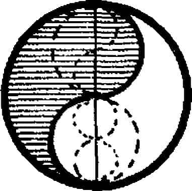
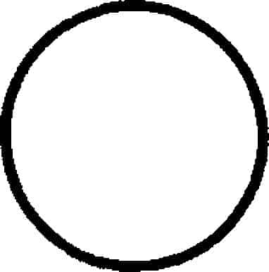

Doğu yaşamında hâlâ temel olan sonsuz dönüş mitosu, bütün zaman boyunca tekrar tekrar ortaya çıkan sabit biçimlerin düzenini sergiler. Güneşin günlük hareketi, ayın dolunay ve koğuşum halleri, yılın bitip tekrar başlaması ve organik doğum, ölüm ve yeni bir doğum ritmi, evrenin yapısında temel bir özellik olarak devamlılık mucizesini gösterir. Dünyanın gittikçe yaşlandığı ve daha kötü durumlara düştüğü altın, gümüş, bakır ve demir çağlarına ilişkin eski mitosu hepimiz biliriz. Şu an kargaşa içine düşmesi, yalnızca tekrar taze çiçek gibi yenilenip ortaya çıkmak, kaçınılmaz yolu katetmeye başlamak için kendiliğinden yenilenmesi anlamına gelir. Zamanın olmadığı bir zaman, hiçbir dönem olmamıştır. Zamanın içinde, sonsuzluğun bu kaleydoskop oyununun olmadığı bir zaman da olmayacaktır.
Dolayısıyla, ne insan ne de evren için kişisel özgünlük ve çabayla kazanılacak bir şey vardır. Kendilerini ölümlü gövdeleriyle ve onun edimleriyle tanımlayanlar, elbette ki her şeyi acıyla dolu bulurlar, çünkü onlara göre her şeyin sonu gelmektedir. Fakat kendileri de dâhil her şeyin çevresinde döndüğü sonsuzluğun hareketsiz noktasını bulanlar için her şey olduğu biçimiyle kabul edilebilir, hatta gerçekten de muhteşem ve mucizevi görülür. Sonuç olarak, bireyin ilk görevi kendisine verilen rolü oynamaktır, aynı güneşin ve ayın, çeşitli hayvan ve bitkilerin, suların ve yıldızların yaptığı gibi; direnmeden, hata yapmadan oynamak ve o zaman, belki mümkün olursa bilincini her yerde hâkim olan bütünlük ilkesiyle özdeşleştirebilir.
Bu düşündürücü metafizik kaynaklı geleneğin, ışık ve karanlığın, dünyayı yaratan bir dansla, kozmik gölge oyunu sergileyen rüya gibi büyüsü; hesaplanamaz zamanlardan kalma bir imgeyi çağdaş dünyamıza taşıyor. İlkel biçimiyle temel mitosun Afrika’dan doğuya, Hindistan yoluyla Güneydoğu Asya’ya, Okyanusya’dan Brezilya’ya kadar uzanan geniş ekvator kuşağının cangıl köylerinde; doğum ve ölüm bulunmayan, ama cinayet işlenmesiyle ikisinin de var olduğu, rüya gibi bir başlangıç zamanını anlattığı bilinmektedir. Kurbanın gövdesi kesilmiş ve gömülmüştür. Toplumun beslendiği bitki bu gömülen parçalardan ürediği gibi, bu meyvelerden yiyen herkesin üreme organları oluşmuştur. Dolayısıyla, ölüm dünyaya cinayetle gelmiştir ve kendi zıddıyla, üremeyle dengelenmiştir; yaşamı tüketen şeyin kendisi olan yaşam, sonsuz yolculuğuna başlamıştır.
Dünyanın koyu yeşil cangıllarında yalnızca korkutucu hayvanların diş ve pençeleri değil, insanların korkunç insan yeme şölenleri de görülür. Şölen, başlangıç şoku olarak cinayet sahnesini dramatik biçimde canlandırır, başlangıçtaki cinayeti, cinsel eylem ve yemek töreni izler. Bir ve aynı olan yaşamla ölüm ayrışıp iki olur, gene tek olan cinsiyet iki olur. Yaratıklar ortaya çıkar, ötekileri yiyerek yaşarlar ve ölerek ötekilere yiyecek olurlar; böylelikle zaman içinde dönüşümleri sürüp gider ve mitolojik başlangıcın zamansız arketipi doğar; bireyin düşen yapraktan fazla önemi yoktur. Psikolojik olarak bu tür ritlerin yerine getirilmesinin etkisi, zihnin ana ilgi odağını bireysel olandan (artık birey eritilmiştir), sonsuza kadar yaşayacak olan gruba yöneltmektir. Büyüsel olarak bütün yaşamların içindeki sonsuz yaşamı güçlendirmektir; çokmuş gibi görülen yaşam gerçekte tek ve birdir. Yani tıpkı hindistancevizi, yam, domuz, ay ve ekmekağacı gibi, insan toplumunun da büyüyüp yeşermesi sağlanır.
Sir James G. Frazer, Altın Dal adlı eserinde, dünya uygarlıklarının kendisinden yayılıp türetildiği çekirdek Yakındoğu’nun eski şehir devletlerinde, tanrı-kralların bu cangıl ritine uygun biçimde kurban edildiklerini göstermiştir.{1} Sir Leonard Woolley’in Ur Kral Mezarlarında yaptığı kazılarla, bütün kral maiyetinin canlı canlı gömüldüğü ve Sümerlerde bu uygulamanın MÖ 2350 yılına kadar devam etmiş olduğu açığa çıkmıştır.{2} Ayrıca, Hindistan’da, MS on altıncı yüzyıla kadar kralların kendilerini törenle parçaladıkları görülmüştür{3} ve Kara Tanrıça Kali’nin, birçok adla anılan, “yaklaşılması güç olan”ın (durga) boşluktan ibaret, dolayısıyla doldurulamaz karnı ve her şeyi doğuran rahmi olanın tapınağında, binlerce yıl, başı kesilen kurbanların kanı akmıştır; açılan kanallarla kutsal kaynağa akan kan hâlâ yaşam doludur.
Bugüne kadar Kalighat’ta, Kalküta’daki tanrıçanın önde gelen tapınağında, bahar festivali Durga Puja sırasında üç gün içinde yedi-sekiz yüz keçi kurban edilmiştir. Başlar imgenin önüne yığılırken gövdeler inananlara gider, tefekkür içindeki komünyonlarda tüketilir. Su bufalosu, koyun, domuz ve kümes hayvanları aynı biçimde tanrıça tapımı için savurganca kesilir ve 1835’te insanın kurban edilmesinin yasaklanmasından önce, ülkenin her yanından bedeli daha da yüksek kurbanlar alınmaktaydı. Şiva’nın kuleli Tanjore tapınağında her cuma bir erkek çocuk sunağa yatırılıyor ve kutsal alacakaranlık saatinde başı kesiliyordu. 1830 yılında Bastarlı küçük bir monark, tanrıçanın yardımını sağlamak için Danteşvari sunağında bir seferde yirmi beş adam, on altıncı yüzyılda Kuç Behar kralı aynı yerde yüz elli kişi kurban etmişti.{4}
Assam’ın Jaintia tepelerinde bir kral hanedanının geleneği her Durga Puja’da bir insan kurban etmekti. Yıkanıp temizlendikten sonra kurban yeni elbise giyer, sandal ağacı ve sülüğenle ovalanır, çelenklerle süslenir ve donatılır, imgenin önünde hazırlanan kürsüye çıkartılırdı. Burada tefekkürle kutsal sözleri tekrarlayarak bir süre bekletilen kurban, hazır olduğunda parmağıyla işaret yapardı. Kurban gibi, kutsal sözler söyleyen cellat, kılıcını indirip kurbanın başını keser ve baş altın bir tabak içinde hemen tanrıçaya sunulurdu. Pişirilen ciğerleri yogiler, kutsal kana bandırılmış bir parça pilavı ise hanedan yerdi. Kurban edilenler normal olarak gönüllüler olurdu. Fakat gönüllü bulunamadığında, küçük devlet dışından kurban edilecek insan kaçırılırdı. 1831’de İngiliz egemenliğindeki bölgeden dört kişinin kaybolmasıyla ve birinin kaçıp olanları anlatmasıyla ertesi yıl krallık işgal edildi ve egemenliği geleneğiyle birlikte son buldu.{5}
MS onuncu yüzyıldan kalma bir Hindu yazmasında, Kalika Purana’da, “Törenlere uygun olarak kurban edilen bir insanla tanrıçanın rahmeti bin yıl sağlanmış olur” diye okuyoruz, “üç insanın kurbanı ise yüz bin yıl rahmet sağlar. Şiva, tanrıçanın eşi olarak, korkunç yönüyle, insan eti sunularak üç bin yıl yatıştırılmış olur. Çünkü taze olarak sunulan kan, ambrosia haline geldiğinden; gövde ve baş özellikle memnun edici olduğundan tanrıça adına sunulmalıdır. Bilge olanlar, sundukları yiyecekler arasına böyle eti, tüyü temizlenmiş olarak katmayı unutmazlar.{6}
Bu tür ritlerin vakarla yerine getirildiği masumiyet bahçesinde kurban da, kurban törenini gerçekleştiren rahip de bilinçlerini tanımlayabilmektedirler, dolayısıyla bütün içinde yer alma ilkesiyle gerçeklikleri de tanımlanmış olmaktadır. Hint Bhagavad Gita’nın sözleriyle, “eskimiş elbiselerin çıkartılıp yenilerinin giyilmesi gibi, eskimiş gövdelerimiz de gövdemizin içinde yaşayan tarafından atılmakta ve yeni olan giyinilmektedir’’ anlayışı gerçekten dile getirilmekte ve bu inançla hissedilmektedir.{7}
Oysa Batı’da, bireyin doğumundan önceki ruh haline, benlik olmadan dönme olasılığı çoktan gerilerde kalmıştır; bu düşünceden ayrılmanın ilk önemli aşaması da çekirdek Yakındoğu’nun tanrı-krallarının ve maiyetinin yüzyıllarca ritüel biçimde defnedildiği uzak geçmişte ortaya çıkmış gibidir. Sümer’de, MÖ 2350’lerde insan ve tanrının ayrıştırıldığı yeni mitoloji ve ritüel anlayışı doğmuştur. Kral artık tanrı değildir, tanrının hizmetkârıdır, tanrılara sonsuza kadar hizmet etmek üzere yaratılan köle insan ırkının yöneticisi, Kiracı Tarımcı’dır. Ve artık önem taşıyan taraf kimlik değil ilişkidir. İnsan Tanrı olmak için değil, aksine onu bilmek, ona saygı duymak ve hizmet etmek için yaratılmıştır; öyle ki, eski mitolojik görüşe göre dünyadaki en önemli kutsal varlık olan kral bile, artık yukarıdaki ulu tanrıya kurban sunulmasını denetleyen rahipten ibarettir; kendisine kurban edilerek kendisine dönen tanrı değildir.
İzleyen yüzyıllarda yeni ayrışma anlayışı, dönüş için yeni-karşı özlem doğmasına yol açtı: Artık kimlik özdeşleşmesi olanaksızdı, yaratan ve yaratılan aynı şey değildi ama; bir ceza olarak uzaklaşan tanrının varlığı ve hayali canlandırılmaya başlandı. Zaman içinde eski durağan dönen felekler anlayışı yerine yeni bir mitoloji gelişti. Yaratılışta ilerlemeci, zaman kavramını temel alan yeni mitoloji, zamanın başlangıcında her şeyin bir defada yaratıldığını, sonra düşüşün geldiğini ve hâlâ devam eden yeniden yükselmenin bunu izlediğini kavramsallaştırmaktaydı. Dünya artık sonsuzluk içinde basit bir zaman gösterisi değil, iki güç arasındaki daha önce görülmemiş kozmik bir çekişme alanıydı; bu güçlerden biri ışık diğeri karanlıktı.
Bu kozmik restorasyon mitolojisinin en eski peygamberi, görüldüğü kadarıyla İranlı Zerdüşt’tür. Doğum ve ölüm tarihleri kesin olarak bilinmemektedir. MÖ y. 1200 ve 550 tarihleri arasına yerleştirilmektedir.{8} Yani yaklaşık aynı tarihler arasında yaşadığı tahmin edilen Homeros gibi, belki de bir insan olarak değil, bir geleneğin simgesi olarak kabul edilmelidir. Adıyla ilişkilendirilen sistem, “Doğru Düzen’in ilk babası, güneş ve yıldızların yolunu tayin eden”{9} bilge efendi Ahura Mazda ile her şey mükemmel biçimde yaratılmışken en küçük parçanın bile içine sızan, aldatıcı, bağımsız yalan ve kötülük ilkesi Angra Mainyu arasındaki çelişkiye dayanmaktadır. Dolayısıyla, dünya iyilik ve kötülüğün, ışık ile karanlığın, bilgelik ile şiddetin zafer kazanmak için çekiştiği bileşimdir. Her insanın ayrıcalık ve görevi -yaratılışın bir parçası olarak o da iyi ve kötünün bileşimidir- gönüllü olarak ışığın savaşı kazanması için mücadeleye katılmayı seçmesidir. Zerdüşt’ün, dünyanın yaratılmasından on iki bin yıl sonra doğmasıyla, iyiliğin yararına çelişkide belirleyici bir aşamaya gelindiği kabul edilmektedir. Ve on iki bin yıl sonra, mesih Saoşyant olarak geri döndüğünde, son savaş patlak verecek ve evrenin yanmasıyla karanlık ve yalan ilkesinin sonu gelecektir. Bundan sonra her yer ışığın olacak, tarih kalmayacak ve Tanrı (Ahura Mazda) Krallığı bozulmamış haliyle ezeli olarak kurulacaktır.
Burada insan ruhunun yeniden konuşlandırılması için gizil bir mitik formülleştirmenin bulunduğu görülüyor; ruh zaman içinde ileri doğru çekiliyor, insan evrenin Tanrı adına yenilenmesinden bağımsız olarak sorumlu tutuluyor ve böylelikle yeni, gizil olarak siyasal (nihai olarak düşünsel olmayan) kutsal savaş felsefesi oluşturulmuş oluyor. Bir İran duasında, “Bizler o yenilenmeyi sağlayanlar ve dünyayı ilerletenler, mükemmelliğe eriştirenler gibi olabilir miyiz?” diye soruluyor. {10}
Yeni mitolojik görüşün tarihte ilk kez gücünü ifade edişi, Büyük Kyros’un (ölümü MÖ 529) ve I. Darius’un (hükümdarlığı MÖ y. 521-486) kısa sürede Hindistan’dan Yunanistan’a kadar egemenliklerini genişlettikleri ve gözetimleri sayesinde sürgün sonrası Yahudilerin tapınaklarını yeniden inşa edebildikleri (Ezra 1; 1-11) ve geleneksel miraslarını koruyabildikleri Ahameniş İmparatorluğu sırasında oldu. İkinci tarihsel ifadesi, Yahudilerin onun evrensel mesajını benimsemeleri, sonraki de Hıristiyanlığın ve dördüncüsü İslamın yüklendiği dünya misyonudur.
“Çadırının yerini genişlet ve meskenlerinin eteklerini gersinler; esirgeme; iplerini uzat ve kazıklarını pekiştir. Çünkü sağa sola yayılacaksın; ve senin zürriyetin milletleri mülk edinecek, ve ıssız kentleri halk ile dolduracak” (İşaya 54: 2-3; MÖ y. 546-536).{11}
“Ve Melekûtun bu İncil’i, milletlerin hepsine şehadet olmak üzere, bütün dünyada vazedilecektir; ve son o zaman gelecektir”(Matta 24: 14; MS y. 90).
“Onları bulduğunuz yerde öldürün. Sizi çıkardıkları yerden siz de onları çıkarın. Fitne çıkarmak, adam öldürmekten daha kötüdür... Fitne kalmayıp yalnız Allah’ın dini ortada kalana kadar onlarla savaşın. Eğer vazgeçerlerse sataşmayın. Zulmedenlerden başkasına düşmanlık yoktur” (Kuran 2: 191, 193; MS 632).{12}
İnsan kaderine ve erdemine ilişkin tamamen zıt iki mitoloji çağdaş dünyada bir araya gelmiştir. Ve yeni toplumun oluşum sürecinde uyum içinde gelişmesine katkıda bulunmaktadır. Çünkü sabahın serinliğinde Tanrı’nın dolandığı bahçede büyüyen ağaçtan, İran’ın batısındaki bilgeler iyi ve kötü bilgisini içeren meyveyi almışlardır. Öteki kültürel bölgedekiler, Hindistan ve Uzakdoğu’dakiler ise yalnızca ezeli yaşam meyvesini tatmışlardır. Fakat iki dalın da temelde tek bir ağaç oluşturduğunu, bahçenin ortasından yükselip belirli bir yüksekliğe geldikten sonra iki dala ayrıldıklarını biliyoruz.{13} Aynı biçimde, iki mitoloji de Yakındoğu’daki ortak kökten kaynaklanıyor. Ve eğer insan iki meyveyi de tatmak isterse, deniliyor; Tanrı’nın kendisi haline gelir (Tekvin 3: 22). Bugün Doğu’yla Batı’nın kaynaşmasının bize sunduğu nimet de bu.
Doğu ve Batı’nın, Yakındoğu’da uygarlığın şafağı doğduktan sonra çağımızda birbirlerini karşılıklı olarak yeniden keşiflerine kadar geçen zaman içinde ilk varlığın, gerçekte birken iki olanın mitosunda birbirine zıt anlatımlar geliştirmiş olmaları, mitolojilerinin ve dolayısıyla psikolojilerinin ne kadar ayrıştığını ortaya koyar.
MÖ y. 700’den kalma Hint örneği Brihadaranyaka Upanişad’da şunları okuyoruz: “Başlangıçta sadece Atman vardı. Etrafına baktı, lâkin kendisinden başka hiçbir şey görmedi. “Ben varım” dedi. Bu nedenle, Onun adı “Ben” oldu. Bu nedenle, şimdi dahi bir adama kim olduğunu sorsanız, o adam önce “Ben” der, sonra da sahip olduğu diğer adını söyler.
Korku duydu, çünkü yalnızlık korku yaratır. “Benden başka hiçbir şey yoksa, niçin korkayım?” diye düşündü. O zaman korkusu geçti; korkacak hiçbir şey yoktu, çünkü korku ikinci bir varlık olduğu zaman gelir.
Bu yalnızlık nedeniyle, mutsuzdu. Kendisine bir arkadaş istedi. Kendisini ikiye böldü, böylelikle erkek ve kadın doğdu. Bilge Yajnavalkya’nın dediği gibi gövdesi bezelye gibi ikiye ayrıldı. Ve kadın böylelikle ortaya çıktı. Onunla birleşti ve bu şekilde insanlık doğdu.
Kadın düşündü: “O, beni kendisinden yarattı; benimle nasıl birleşebilir; kendimi gizleyeceğim.” O zaman kadın inek oldu, erkek boğa oldu, birleştiler ve böylece davarlar doğdu. Dişi kısrak, erkek de aygır oldu; dişi eşek, öteki erkeği oldu, birleştiler ve böylece tek tırnaklı hayvanlar oldu. Dişi keçi, erkek de teke oldu; dişi koyun, erkek de koç oldu ve böylece koyunlar, keçiler doğdu. Bu şekilde karıncalara kadar bütün çiftler yaratıldı.
Sonra düşündü: “Gerçek yaratılış benim, çünkü bütün her şeyi ben yarattım.” Böylece “yaratılış” kavramı doğdu [Sanskritçe srştih; sözlük anlamıyla “yayılan, çoğaltılan, bırakılan”].
Bu gerçeği bilen kişi gerçekten bu yaratılışta yaratıcı olur.{14}
İlk varlığın ikiye bölünmesi, fakat iki görünürken gerçekte tek olmasına ilişkin Batı’da bilinen en iyi örnek, elbette Tekvin Kitabı’nın ikinci bölümüdür, ne ki burada anlayış farklılaşmıştır. Çünkü burada çift, kutsal bir varlık tarafından yaratılmıştır; anlatıldığı gibi erkeğe derin bir uyku verilmiş ve kaburgasından kadın çıkartılmıştır.{15} Hint anlatımında bölünen ve yalnız insan değil tüm yaratılış haline gelen Tanrı’nın kendisidir; dolayısıyla, her şey tek kutsal varlığın ifadesidir. Başka hiçbir şey yoktur; Kitabı Mukaddes’te ise Tanrı ile insan başlangıçtan beri farklı varlıklardır. İnsan, Tanrı’nın suretinde yaratılmıştır ve burnuna gerçekten Tanrı soluğu üflenmiştir. Fakat varlığı, kendi yapısı Tanrı’nınki değildir; evreninkiyle de aynı değildir. Dünya’nın, hayvanların, Âdem’in (sonra Âdem ve Havva olmuştur) yaratılması kutsal varlıkla içsel değil dışsaldır. Sonuç olarak resmi bir ayrım değil, yaratılıştan ayrım vardır. Ve bilginin hedefi Tanrı’yı şu anda ve her şeyde görmek olamaz, çünkü Tanrı şeylerde değildir. Tanrı aşkındır, Tanrı ancak ölülerce görülebilir. Bilginin hedefi, daha çok, Tanrı’nın yaratıklarıyla olan ilişkisini veya daha özel olarak insanla olan ilişkisini bilmektir; bu bilgiyle, ancak Tanrı’nın rahmetiyle, insanın iradesi Tanrı’nınkiyle ilişkilendirilebilir.
Dahası, mitosun Kitabı Mukaddes’teki anlatımına göre, insanın düşüşü (günaha girişi) yaratılıştan sonradır; oysa Hint anlatımında yaratılışın kendisi düşüştü; Tanrının parçalanıp bölünmesi. Ve Tanrı mahkûm edilmez. Yaratışı, “saçılıp yayılması” (srştih) gönüllü bir eylem olarak tanımlanır, daha çok olmak için dinamik bir istek; bu istek yaratılıştan önce duyulmuştur, dolayısıyla metafiziktir, simgeseldir, tarihsel ve sözel bir anlamı yoktur. Âdem ile Havva’nın düşüşü ise daha önce yaratılmış zaman ve mekân çerçevesi içindedir ve olmaması gereken bir kazadır. İnsan biçiminde çevresine bakarak kendisinden başka hiçbir şey görmeyen ve “ben” diyerek yalnızlığından korkup iki olmayı isteyen varlığı anlatan mitos ise, varlığın yaratılışında hatadan söz etmez, bir hatanın düzeltilmesi veya gelişerek iyileşmesi söz konusu değildir, yaratılış eriyip yayılmadır. Hint bakış açısı metafiziktir, şiirseldir; Kitabı Mukaddes’in bakış açısı etiktir, tarihseldir.
Âdem’in düşüşü ve bahçeden kovuluşu hiçbir biçimde kutsal varlıktan metafizik bir ayrılış değildir, tarihsel bir olaydır veya insanın tarih öncesine aittir. Ve yaratılmış dünyada yaşanan bu olayı, kitabın kalan bölümlerinde insanın Tanrıyla olan ilişkilerinde tekrar bağlantı kurabilmesindeki başarı ve başarısızlıklarının anlatımı izler; anlayış gene tarihseldir. Çünkü Tanrı’nın kendisinin, zaman içinde belirli bir anda, kendi isteğiyle belirli bir halkla sözleşme biçiminde yeni bir düzen oluşturarak insana yaklaştığını okuyoruz. Ve bu insanlar, bundan sonra dünyada başka örneği görülmedik rahip bir ırk oluyorlar. Tanrı’nın, yaratılışından pişman olduğu insanla uyuşması (Tekvin 6: 6) ancak bu belirli topluluğun erdemiyle elde edilebilecektir. Çünkü zamanla dünyada Efendi Tanrı’nın krallığının kurulması gerçekleşecektir, sapık monarşiler yıkılacak ve “insanlar tapınsınlar diye kendilerine yapılan gümüş putlarını ve altın putlarını, köstebeklere ve yarasalara” attıkları gün İsrail kurtulacaktır.{16}
“Ey kavimler, uğultu edin ve kırılın; ey bütün uzak memleketlerden olanlar, kulak verin; kuşanın ve kırılın. Aranızda öğüt- leşin ve hiçe çıkarılacaktır; bir söz söyleyin, durmayacaktır; çünkü Allah bizimledir.”{17}
Hint görüşünde, tersine, burada kutsal olan orada da kutsaldır; kimsenin “Tanrı’nın günü”nü beklemesine, hatta bunu umut etmesine gerek yoktur. Çünkü yitirilmiş olan, onun kendi (atman) her parçasında şu anda ve burada mevcuttur; yalnızca istenilmesi yeterlidir. Veya belirtildiği gibi: “insan, ancak evreni bir deri parçası gibi sardığında Tanrı’yı bilmekten gayri sıkıntılarının sonu gelecektir.”{18}
Kitabı Mukaddes dünyasında gene (tarihsel) bir soru ortaya çıkar: Seçilmiş halk kimlerdir? Çeşitli iddiaların bulunduğunu biliyoruz: Yahudiler, Hıristiyanlar veya Müslümanlar, her biri kendilerinin özel bir değerlendirmeyle yetkili kılındıklarını iddia etmektedir. Yani Tanrı, tarih dışı olarak kavranılmasına ve maddi olmamasına (içkin değil aşkın olmasına) karşın, mucizevi biçimde, düşmüş insanın kurtulması işine bir sözleşme, şeriat veya indirilen kitapla, gelecekte ortaya çıkacak genel, toplumsal bir deneyimle dâhil olmuştur. Dünya yozdur ve insan günahkârdır; fakat birey, tek tanınmış cemaatin kaderiyle işbirliği yaparak Tanrı’yla ilişkisini düzenleyebilir, gelecekteki doğruluk krallığının rahmetine (“ve Rabbin izzeti izhar edilecek ve bütün beşer onu hep birden görecekler”) kavuşabilir.{19}
Hint deneyim ve görüşüne göreyse, kutsal giz ve gücün aşkınlığının kabul edilmesine karşın (“bilinenden başka, ayrıca bilinmeyenin üstünde”){20} aynı zamanda içkindirler (“kutudaki jilet gibi, kavdaki ateş gibi”){21} Bu, kutsallığın her yerde olması değildir, her şey olmasıdır. Dolayısıyla, insanın dışarıdan gelecek aile, şeriata, bildirime veya ona dönmek için seçilmiş bir halka gereksinimi yoktur. İnsanın yalnızca psikolojik yönelimini değiştirmesi ve kendi içindekini tanıması (yeniden tanıması) yeterlidir. Bu tanıyıştan uzaklaştırıldığımızda, kendi gerçekliğimizi kavrayamadığımız beyinsel dar görüşlülük içine düşmüşüz demektir; Sanskritçede bu duruma maya “hayale kapılma” denir (kökü ma fiili, “ölçmek, çıkarmak, oluşturmak, inşa etmek”, öncelikle bir Tanrı’nın veya cinin hayali etkiler uyandırabileceğine işaret eder, biçim değiştirerek aldatıcı maskelerle görünerek insanı yanıltabilirler; ikincisi, “büyü”dür, hayaller yaratmak, savaşta kamuflaj yapmak, aldatıcı taktikler uygulamak ve son olarak, felsefi söylemde gerçekliği kaplayan cehaletin etkisinden kaynaklanan hayal anlamına gelir). Tanrı’nın sabahın serininde dolandığı{22} coğrafi, tarihsel olarak kavranan bahçeden sürgün edilişten söz eden Kitabı Mukaddes anlayışı yerine, Hindistan’da daha MÖ y. 700’de (Pentateukhos’un bir araya getirilmesinden yaklaşık üç yüz; yıl önce), büyük temanın psikolojik kavranışı geliştirilmiştir.
Çift cinsiyetli ilk varlık mitosu ortaktır ve iki gelenekte de aynı görevi yerine getirir; insanın normal laik yaşamında aralığı kutsal Alfa’dan Omega’ya kadar uzatmak. Fakat görüş açıları kökten farklılık taşır, dolayısıyla iki kökten farklı uygarlığa temel oluştururlar. Çünkü eğer insan kutsallıktan tarihsel bir olayla uzaklaştırılmışsa geri dönüşü de tarihsel bir olayla olacaktır; eğer engellenişi bir tür psikolojik olaydan kaynaklanıyorsa, dönüşü de psikolojik yolla olacaktır. Ve dolayısıyla, Hindistan’da nihai odak noktası cemaat değil (gerçi daha sonra kutsal cemaat düşüncesinin disiplin verici güç olarak korkulur bir rol oynadığını da göreceğiz) yogadır.
Hintçe yoga terimi Sanskritçeden gelir ve kökü olan yuj fiilinin anlamı “bağlanmak, ilişkilendirmek veya birleştirmek”tir. Etimolojik olarak “yoke” sözcüğüyle aynı kökten gelir. İngilizcede yoke, boyunduruk demektir ve kavram olarak “religion” din, Latince religio “birbirine bağlamak, tutturmak” sözcüğüyle benzerlik gösterir, insan, yaratılan, dinle Tanrı’ya bağlanmaktadır. Fakat din, religion, tarihsel olarak koşullanmış bir sözleşmeye, şeriata veya Kuran’a bağlanmayı anlatırken, yoga zihnin, “zihnin bilgi edindiği” yüce biçimde düzenlenmiş ilkeye psikolojik olarak bağlanmasıdır.{23} Dahası, yogada nihai olarak özün öze, bilincin bilince bağlanması söz konusudur; çünkü maya arasından iki olarak görünen gerçekte ayrı değildir, oysa dinde arasında bağ kurulan Tanrı ile insandır ve bunlar aynı değildir.
Doğu’nun popüler dinlerinde Tanrıların inananlar için dışsal varlıklar olarak görüldüğü elbette doğrudur. Ayrıca, kural ve ritlere bağlı bir sözleşme ilişkisi gözlemlenmektedir. Gene de, nihai kavrayış olarak bilgelerin kutsadığı Tanrı kendisinin yansıttığı gizemle aynı gerçeklik içindedir. Ego hayali kaldığı sürece, ayrı bir ilah düşüncesi de aynı derecede mevcut olacaktır. Ve tersine, ayrı bir ilah düşüncesi beslendikçe sevgi, korku, tapınma, sürgün veya kefaret ilişkisi içinde ego hayali devam edecektir. Fakat bu ikilik hayali tamamen mayanın oyunudur. “Sen buun” (tat tvam asi){24} bilgeliğe atılan ilk adım için uygun olan düşüncedir.
Başlangıçta, okuduğumuz gibi yalnızca Atman vardı, fakat “ben” dedi (Sanskritçe aham) ve hemen korku hissetti, bundan sonra da istek.
Yaratılış anından (yaratıcının kendi psikolojisinin sonucu olarak) söz edildiği bir görüşte, iki temel dürtünün, çağdaş çözümleyici okulların insan ruhunda tanımladığı biçimde, özdeşleştirilişi üstünde durmak gerekir; bu iki temel dürtü saldırganlık ve istektir. Carl G. Jung, Normal ve Patolojik Psikolojide Bilinçaltı adlı ilk çalışmalarından birinde (1916){25}, iki psikolojik tip tanımlamıştır: içedönük kimse, korkulardan şikâyetçidir ve dışadönük kimse istekleriyle hareket eder. Sigmund Freud da Zevk İlkesinin Ötesi adlı çalışmasında (1920){26}, “ölüm isteği” ve “yaşam isteği”ni tanımlar: Bir yanda şiddet isteği ve ondan duyulan korku (thanatos, destrudo) ve öte yanda sevme ve sevilme gereksinim ve isteği vardır (eros, libido). İkisi de ruhun derinlerdeki karanlık enerji kaynaklarından çıkar, id’den, dolayısıyla ben-merkezli “zevk ilkesi”nin yönetimi altındadırlar: Ben istiyorum, Ben korkuyorum. Aynı biçimde Hint mitosunda da, Atman “Ben” (aham) der demez korku ve istek duymuştur.
Fakat şimdi -ve burada, Doğu ve Batının ruhun eğitimine yaklaşımlarındaki temel farka ilişkin bence en temel noktaya geliyoruz- Hint mitosunda ego “Ben” (aham) ilkesi tamamen zevk ilkesiyle özdeşleştirilmiştir, oysa Freud ve Jung’un psikolojilerinde onun temel işlevi dış gerçekliği bilmek ve onunla ilişki kurabilmektir (Freud’un “gerçeklik ilkesi”): Metafizik gerçeklik değil fizik gerçeklik, zaman ve mekânın deneysel çerçevesi. Yani ruhsal olgunluk, çağdaş Batı dünyasında anlaşıldığı biçimiyle ego ile id arasında farklılık olmasını gerektirir. Oysa Doğu’da, en azından Hindistan’dan kaynaklanan bütün öğretilerin tarihi boyunca, ego (aham-kara: “Ben” sesini çıkarmak) libidoya ait bir hayale kapılma olarak yalanlanmış ve eritilmeye çalışılmıştır.
Buddha’nın “uyanış ağacı”nın Bo -veya Bodhi- (bodhi “uyanış”) ağacının dibinde amaçlar amacını edindiği olayı anlatan muhteşem öyküye göz atalım.
Kutsanmış olan, yalnız başına, yalnız kendi varlığının arkadaşlığıyla, zihni yalnızca erme düşüncesiyle dolu olarak, gece yarısı, çiçeklerin kapanma zamanında aslan gibi kalktı ve Tanrıların bayraklar astığı yol boyunca ilerleyerek Bodhi ağacına doğru ilerledi. Yılanlar, cüceler, kuşlar, kutsal müzisyenler ve çeşitli cinslerden sayısız varlık ona kokular, çiçekler ve başka sunaklarla tapındılar, göklerin korosu semavi bir müzik döktürüyordu, on bin dünya neşeli kokularla, çelenklerle ve alkışla dolmuştu.
Ve tam o anda, ters yönden Sotthiya adlı ot kesici geldi, kesilmiş ot yükünü taşıyordu; Kutsal Varlığı görünce, onun kutsal bir insan olduğunu anlayıp ona sekiz avuç dolusu ot verdi.
Sonra Buddha-olacak-olan Bodhi-ağacına gelince, güney tarafında durdu ve yüzünü kuzeye döndü. Hemen dünyanın güney yarısı en dipteki cehenneme değinceye kadar dibe battı. Kuzey yarısı en yüksek cennete kadar yükseldi.
Buddha-olacak-olan, “Üstün bilgeliğe erme yerinin burası olacağını sanmıyorum” dedi. Ağacın çevresinde sağ yanı ona dönük yürüyerek batı tarafına geldi ve yüzünü doğuya döndü. O anda dünyanın batı yarısı en dipteki cehenneme değinceye kadar dibe battı ve doğu tarafı en yüksek cennete kadar yükseldi. Gerçekten, Kutsal Varlık nerede durursa koca dünya yükselip alçalıyor, araba tekeriymiş de biri çemberinde geziyormuş gibi yarılıyordu.
Buddha-olacak-olan, “Üstün bilgeliğe erme yerinin burası da olduğunu sanmıyorum” dedi; sağ tarafı ağaca dönük daha ileri yürüyerek kuzey tarafına geldi ve yüzü güneye dönük durdu. O zaman dünyanın kuzey yarısı en dipteki cehenneme değinceye kadar dibe battı ve güney tarafı enyüksek cennete kadar yükseldi.
Buddha-olacak-olan, “Üstün bilgeliğe erme yerinin burası da olduğunu sanmıyorum” dedi; sağ tarafı ağaca dönük ağacın çevresinde yürüyerek doğu tarafına geldi ve yüzü batıya dönük durdu.
Bugün bütün Buddhalar, Bodhi-ağaçlarının doğu tarafında otururlar ve bu taraf asla sallanmaz veya titremez.
Sonra Büyük Varlık kendi kendine, “Burası bütün Buddhaların yerleştikleri Sarsılmayan Nokta; duygu ağını parçalamanın yeri burası” dedi; bir tutam otunu dibinden tutarak oraya silkeledi. Ve anında ot sapları on dört gez uzunluğunda bir koltuğa dönüştü; öyle simetrik bir biçimi vardı ki, en yetenekli ressam veya oymacı bunu yapamazdı.
Buddha-olacak-olan arkasını Bodhi-ağacına vererek doğuya döndü ve çok güçlü bir niyette bulundu: “Derim, liflerim ve kemiklerim kurusun, razıyım; bütün etim ve kanım kurusun; fakat üstün ve mutlak bilgeliğe ermedikçe bu koltuktan kıpırdamayacağım!” Bağdaş kurup çözülmez biçimde oraya yerleşti, aynı anda inen yüz binlerce yıldırım bile onu çözüp oradan atamazdı. {27}
Evini, karısını, çocuğunu birkaç yıl önce, kendisini bütün acılardan kurtaracak bilgiye kavuşmak için terk etmiş olan Prens Gautama Şakyamuni böylece sonunda evrenin orta noktasına, dayanak noktasına gelmişti; burada mitoloji diliyle anlatılıyor olsa da, bu nokta dünyada aranıp bulunacak fiziki bir yer değildir. Söz konusu olan tinsel bir yerdir. Evrenin mükemmel biçimde gözlenebildiği, zihnin denge içinde olduğu bir noktadır: Her şeyin çevresinde döndüğü hareketsiz bağlantısızlık noktası... İnsanın dünyevi görüşüne göre, şeyler zaman içinde hareket eder ve son nitelikleriyle somuttur. Ben burdayım, sen ordasın: Sağ ve sol, yukarısı ve aşağısı, ölüm ve yaşam. Zıt çiftler her yandadır ve dünya tekerleği, zaman tekerleği yaşamlarımızı ortasına almış dönmektedir. Fakat her şeyin dayanak noktası olan bir orta nokta, tekerleğin parmakları gibi boşluk içinde zıtların bir araya geldiği bir merkez vardır. Ve orada yüzü doğuya dönük (yeni günün yönüne) geçmişin, bugünün ve geleceğin Buddhalarının -zaman kipleri içinde bir dizi görünseler de, gerçekte hepsi tek Buddhalığa aittirler- mutlak aydınlanmayı yaşadıkları söylenir.
Prens Gautama Şakyamuni, bu noktada varlığın son gizini elde etmeyi aklına koymuşken; şimdi yaşam hayalinin efendisi tarafından, zamanın başlamasından önce insan-biçiminde-olan ve çevreye bakıp kendisinden başka bir şey göremeyip “Ben” diyen ve o anda korku ve istek duyan Atman’ın kendisi tarafından saldırıya uğruyordu. Mitolojik olarak aynı olan Varlıklar Varlığı Buddha-olacak-olanın önünden geçti; önce prens olarak Eros, İstek (Sanskritçe kama) kişiliğiyle çiçekler içinde yayını tutuyordu; sonra bir savaş filinin üstünde cinlerin korkutucu mihracesi Kral Thanatos (Sanskritçe mara), Kral Ölüm olarak.
Buddha’nın yaşamını anlatan, “şiirsel” (kavya) denilen türün en eski ustalarından biri olarak tanınan, eğitim görmüş bir Brahmanken Budizmi kabul eden Aşvaghoşa (MS y. 100) tarafından yazılan ünlü Sanskritçe metinde şunları okuyoruz: “Dünyada İstek adı verilen efendi, Ölüm Efendi adı verilen çiçekli salların sahibi ve ruhsal bağımsızlığın son düşmanı, üç çekici oğlunu, Zihinsel-karmaşa, Neşe ve Gurur’u ve zevk düşkünü üç kızı, Şehvet, Eğlence ve Tutsak Alıcı’yı çağırarak onları Kutsal Olan’ın yanına yolladı. Çiçekli yayını ve istek Nöbetlerini Azdırıcı, Memnun Edici, Çıldırtıcı, Kavurucu ve Ölüm Taşıyıcı adlı beş okunu alarak Ulu Varlığın altında oturduğu ağaca yollandı. Bir okla oyalanarak Tanrı kendisini ona gösterdi ve orada varlık okyanusunun öteki kıyısına yolculuk yapmakta olan sakin kâhine seslendi:
“Kalk, kalk soylu prens!” diye emretti, kutsal otoritenin sesiyle; “kastının sana verdiği görevleri anımsa ve şu bağlantısızlık için, içine düştüğün düşkün araştırmayı bırak. Dilenci yaşamı soylu aileden gelen biri için uygun değildir; kastının görevlerine bağlılık göstererek iyi toplum düzenine hizmet etmeli, bildirilmiş olan dinin kurallarını uygulamalı, dünyadaki kötülükle savaşmalı ve böylece Tanrı gibi cennetin en yüksek yerinde yatacağın yeri kazanmalısın.”
Kutsal Olan’da hiçbir hareket görülmedi.
“Kalkmıyor musun?” diye sordu Tanrı. Yayına ok yerleştirdi. “Eğer sen inatçıysan, ensen kalınsa, kararında ısrarlıysan, yayıma taktığım, güneşi ateşe salmış olan bu ok uçacak. Bak yılan gibi dilini şimdiden sana uzatıyor.” Ve sonuç alamadan böyle tehditlerde bulundu, ipi bıraktı, ama sonuç alamadı.
Çünkü Kutsal Olan, sayısız yaşam boyunca sınırsız olarak vermenin getirdiği sayısız davranışın oluşturduğu erdemle, zihninden “ben” (aham) kavramını çıkarmıştı, bununla bağıntılı olarak onda “sen” (tvam) kavramı da yoktu. Hareketsiz Noktanın boşluğunda, bilgi ağacının altında, zıt çiftlerinin ötesinde, ölüm ve doğumun, iyi ve kötünün ötesinde, ben ve senin ötesinde, “ben” üstüne düşünmüş olsa, belki “onlar”ı kavrayacaktı ve önünde kendilerini özne sahasında nesne gibi sergileyen Tanrı’nın şehvet dolu kızlarını görmüş olsa, en azından kendisini zaptetmek zorunda kalacaktı. Ama zihninde “ben” olmadığı için, “onlar” da yoktu. Kendisi mutlak biçimde orada olmadığından, mutlak hareketsizlik içinde, bütün Buddhaların fethedilemez (psikolojik) konumuyla Hareketsiz Nokta’ya yerleşmiş olan Kutsal Olan’a keskin ok işlemiyordu.
Ve çiçekli darbesinin başarısız kaldığını gören Tanrı kendi kendine, “Güneşi tutuşturan oku fark etmiyor bile! Duyudan yoksun olabilir mi? Çiçekli okuma da, kızlarıma da değmez, onun üstüne ordumu göndereyim” dedi.
Ve hemen İstek Efendisi olarak baştan çıkartıcı niteliğinden sıyrılarak, ulu Tanrı Ölüm Efendi oldu, çevresinde ifrit orduları oluştu; korkutucu biçimleri vardı ve ellerinde yaylar, oklar, mızraklar, gürzler, kılıçlar, ağaçlar hatta alevli dağlar taşıyorlardı. Yaban domuzu, balık, at, deve, katır, kaplan, ayı, aslan ve fil görüntüleri içinde, tek gözlü, çok yüzlü, üç başlı, koca ve benekli karınlıydılar; pençeleri, dişleri, bazılarının ellerinde başsız gövdeler, çoğu yarı sakat yüzleriyle, canavar ağızlarıyla, topuz gibi dizleriyle keçi gibi kokuyordu. Bazısı bakır kırmızısı, bazıları deri giyimli, bazıları çırılçıplak, alevden veya duman gibi saçları, uzun sarkık kulakları vardı, yüzlerinin yarısı beyazdı, bazılarının gövdelerinin yarısı yeşildi, kırmızı ve is rengiydi, sarı ve siyahtı; kolları yılandan uzundu, kuşaklarında ziller sallanıyordu; bazıları palmiye kadar uzundu, mızrak taşıyorlardı, bazıları kocaman dişliydi, çocuk boyundaydı; bazıları kuş gövdeli, koç yüzlüydü veya insan gövdeli kedi yüzlü olanlar vardı; karmakarışık saçlılar, tepelikliler, yarı kel olanlar; asık yüzlüler, zaferle parlamış yüzler insanın cesaretini kırıyor, aklını başından alıyordu. Bazıları gökte ilerlerken, bazıları ağaçların tepesinde yürüyor; birçoğu üst üste dans ediyor, birçoğu da yerde çılgınca sıçrıyordu. Biri dans ederken üç çatallı zıpkınını sallıyor, öteki topuzunu çeviriyordu; biri boğa gibi coşkuyla sıçrarken, bir başkasının her saç telinden alevler çıkıyordu. Ve gene sarkıttıkları kocaman dilleriyle çevresini sarıp onu korkutmaya çalışanlar vardı; vahşi, keskin dişli birçok ağız, sivri demir gibi dik kulaklar, güneş gibi parlak gözler etrafını almıştı. Göklere fırlayan başkaları kayalar, ağaçlar, baltalar, dağ gibi alevler içinde tutuşmuş saman bağları, yağmur gibi kor, yılan gibi kıvrılmış alevler, dolu gibi taş savuruyordu. Ve bu sırada, elinde kafatası tutan çıplak bir kadın çevrede sıçrıyor, bir yerde bir an durmadan kutsal metinlerden çıldırmış öğrencinin aklı gibi oradan oraya atlıyordu.
Ama ne oldu? Bütün bu korkutucu görüntüler, sesler, kokular arasında Kutsal Olan’ın zihni, kargalar arasındaki altın tüylü güneş kuşu Garuda’nın aklı kadar bile etkilenmedi. Ve göklerden bir ses geldi: “Ey Mara, kendini boş yere yorma! Kötülükten vazgeç ve barış içinde git! Bir gün ateş bile ısısından vazgeçebilir, su akıcılığından, toprak katılığından vazgeçebilir, fakat birçok yaşamın sayısız çağlarında kazandığı yaratılışla, bu ağacın dibine gelen Ulu Varlık kararından dönmez.”
Ve Tanrı Mara, ordusuyla birlikte yenilgiyi kabul ederek gözden kayboldu. Dolunayın ışığıyla aydınlanmış olan cennet, genç kız gülüşü gibi parladı, çiçek yağmuru, çiçek yaprakları, demet demet çiçekle, çiğden ıslanmış çiçeklerle Kutsal Olan’ı yıkadı. Gecenin kalan bölümünde, muhteşem geceyi ilk kez gözleyişinde, Kutsal Olan önceki varlığı hakkında bilgi sahibi oldu; ikinci gözleyişinde kutsal göze kavuştu, sonuncuda Bağımlı Yaratılış yasasını gördü ve güneş doğarken bilgeliğe erdi.
Toprak sevincinden, bir kadının titrediği gibi sallandı. Tanrılar her yandan artık Buddha, Uyanmış Olan’ı, Kutsal Olanı kutsamaya geldiler. “İzzet senin olsun insanların aydınlanmış kahramanı” diye şarkılar söylediler, çevresinde halka olup güneş yönünde eğilip selamlayarak döndüler. Ve dünyanın cinleri, hatta Mara’nın kızları ve oğulları bile, göklerde dolaşanlar ve yerlerde yürüyenler, ilahların hepsi geldi. Ve zafer elde edene her biri kendi konumlarına uygun biçimde tapındıktan sonra yeni bir vecdle ışıklanmış olarak yerlerine döndüler.{28}
Özetle: Buddha, “ben” duygusunu yitirdiği arınmayla yaratılışın çok daha öncesine ait bilinç alanına geçmiştir, ancak bu, yaşamı bitti demek değildir. Gerçekten dünya zaman ve mekânında yarım yüzyıldan uzun süre kalacaktır, bu görünürdeki ikiliğe ironiyle katılacaktır. Fakat onun aldatıcılığını bilerek, gerçekten başkası olmayanlara neyin öğretilmesi olanaklıysa başkalarına tutkuyla onları öğretmeye çalışacaktır. Çünkü bu deneyimi yaşamamış, veya en azından ona benzerini yaşamamış olana sözcüklerle bunu öğretmenin yolu yoktur. Ayrıca, ego olmadığında korkulacak, istenecek veya öğretilecek “başkası” da yoktur.
Klasik Hint öğretisindeki insanın yaşamak ve mücadelesini vermek zorunda olduğu dört amaçtan - aşk ve zevk (kama), güç
ve başarı (artha), kamu düzeni ve ahlaki erdem (dharma) ve son olarak hayalden kurtulma (mokşa)- ilk ikisinin Freud’un ‘zevk ilkesi’ olarak adlandırdığı, insanın, ‘ben istiyorum’ formülüyle özetlenen birincil dürtülerinin ifade edilişi olduğunu görüyoruz. Doğu görüşüne göre yetişkin insanın, bunları dharma ilkesiyle yatıştırıp egemenliği altına alması gerekir. Klasik Hint düzeninde dharma ilkesi bireye kastının verdiği eğitimle kazandırılır. Bebekliğin ‘ben istiyorum’u ‘sen yapacaksın’a tabi kılınarak bireysel olarak belirlenene değil toplumsal olarak uygulanana uyarlanır; toplumsal uygulama da, güneşin yörüngesi gibi değişmeden kalan kozmik düzenin bir parçası olarak görülmektedir.
Buddha’nın baştan çıkartılması girişimleriyle ilgili buraya aldığımız örnekte, Antagonistin amaçlardan ilk üçünü (üçlü küme-trivarga adıyla bilinirler) temsil ettiği gözlemlenmektedir. Çünkü İstek Efendi olarak birinciyi kişileştirmekte. Ölüm Efendi olarak ikincinin saldırgan gücünü ve tefekkür içindeki bilgeye kalkıp toplumdaki görevlerini yerine getirmek için dönmesi çağrısında bulunduğunda üçüncüyü kişileştirmektedir. Ve gerçekten, yalnız dünyayı yaratıp geliştiren değil, evreni sürekli olarak destekleyen Atman olarak bu amaçların en uygun canlanışıdır. Çünkü dünyayı ayakta tutanlar gerçekten bunlardır. Ve dinlerin çoğunun ritlerinde bu birde-üç olan tanrının üç yönünden bir tanesinin tek tanrı olarak kabul edilmiş olduğunu söyleyebiliriz.
Fakat “Aydınlanmış Olan” Buddha’nın adı ve kazanımıyla dördüncü amaç da açıklanıyor: Hayalden kurtulun! Ve bu amacın elde edilebilmesi için ötekiler engeldirler, durdurulmaları zordur fakat yenilmez değildirler. Dünyanın merkezinde oturarak, kendi varlığını temizleyip kazıyan, fışkıran yaratıcı güce sırtını veren Buddha boşluğun ötesine geçmiş ve ironik olarak evren hemen çiçeklenmiştir. Kendini yok etme eylemi bireysel çabanın ürünüdür. Bu konuda kuşkuya yer yoktur. Fakat Batılı bir göz, dört amaçlı Hint düzeninde, ne ilk iki doğal organizma içinde ve toplumun benimsettiği üçüncüde ne de heyecan uyandırıcı kurtuluş yolu dördüncüde, bireyin zekâyla, yeni bireysel kazanımlarla ve çevresindeki dünyanın zaman ve mekânına uyum sağlamasıyla kişiliğini geliştireceğine inanarak, ne de yaratıcı deneylerle keşfedilmemiş olanaklar yaratacağına ve toplumsal düzen bağlamında daha önce görülmemiş eylemleri nedeniyle kişisel sorumluluk yükleneceğine dair bir beklenti ve böyle bir olasılık düşüncesi bulunduğunu hemen fark edecektir. Hint geleneğinde ebediyetten beri her şey mükemmel biçimde düzenlenmiştir. Yeni bir şey olamaz, öğrenilecek yeni bir şey yoktur, eskiden beri bilgelerin öğrettikleri vardır. Ve sonucunda ‘ben istiyorum’ ‘sen yapacaksın’ ufkuyla sınırlı eğitimin sıkıcılığı dayanılmaz olduğunda, bütün sunulan dördüncü ve son amaçtır, bebeklik egosunun bütünüyle dışlanması, hem ‘ben’ hem ‘sen’le olan bağların eritilmesi veya kurtuluş (mokşa)-.
Avrupalı Batı’daysa, iradenin özgürlüğüne ilişkin köktenci öğreti özünde her bireyi ötekinden ayırır, doğa ve Tanrı’nın iradesi de bireyinkinden ayrılmıştır, herkes kendi deneyimi ve çabasıyla elde ettiği zekâsına göre bütünle, boşlukla, mutlakla veya terimlerin ötesinde adlandırılması nasıl uygun görülüyorsa onunla -hiçbir özdeşleşme veya içinde erime olmadan- ilişki kurmaktan sorumlu tutulmuştur. Ve bu dünyevi alanda da aynı biçimde, eğitim görmüş egonun normal olarak bebeklik döneminin zevk ve itaat kutupluluğundan çıkacağı ampirik gerçeklikle kişisel, zorlamaya dayanmayan, duyarlı bir ilişki kurarak tahmin edilemeyene doğru belirli maceracı yaklaşımla, kararları için belirli sorumluluk duygusu taşıması beklenmektedir. İyi bir asker olarak değil, gelişmiş tekil birey olarak yaşam ülküseldir. Doğu’da benzerini aramak boşunadır. Orada ülküsel olan egonun geliştirilmesi değil bastırılmasıdır. Tüm yazında çeşitli biçimlere sokulup yorumlanarak anlatılan formül budur. “Ben” ilkesinin, gerçeklik işlevinin sistematik biçimde, sürekli olarak, ısrarla eritilmesi; sonuç olarak ortada gelişmemiş, kapılmaya tamamen açık, eleştiri dışı mitik özdeşleşmeler kalmıştır.
Hindistan’dan Uzakdoğu’ya dönüldüğünde, Tao Te Çing’in “Yolun (tao) Erdem Veya Gücü (te) Üstüne Kitap (Çing)’in girişinde şu satırları okuyoruz:
Tartışılabilen Tao, sonsuza kalan ezeli Tao değildir;
Adlandırılabilen ad, sonsuza kalan ezeli ad değildir.
Adsız olandan gökler ve yer çıkmıştır,
Adı olan on bin şeyin anasıdır.
Gerçekten: ancak istek duymayan gizli özü fark edebilir.
İsteklerden kurtulmadıkça ancak kabukları görebiliriz.{29}
Yol, tarik anlamındaki tao sözcüğü, evrenin yasası, gerçeği veya düzeni anlamında her türün evrendeki yasa, gerçek ve düzenini anlatır ve dharma’nın eşdeğeridir. Arthur Waley, “Sözcüğün anlamı yol (tarik), tutumdur” diye yazar; “dolayısıyla, insanın bir şey yapma yöntemi, ilkesi, öğretisidir de. Cennet Yolu, örnek olarak, çok çetindir; ‘sonbahar geldiğinde güzelliğinden dolayı bir yaprak, kokusu nedeniyle bir çiçek atlanmadan düşer.’ İnsan Yolu, başka şeylerle birlikte doğurganlık demektir; hadımların ‘insan yolundan uzak’ oldukları söylenir. Çu Tao ‘monark olma’, yani yönetme sanatının yoludur. Her felsefe okulunun kendi tao’su, yaşamın düzenleneceği yöntem hakkında öğretisi vardır. Nihayet, izleyicilerinin Taocu adını aldıkları belirli bir felsefe okulu vardır, tao ‘evrenin işleyiş biçimi’ anlamına gelir; burada terimin Tanrı’yı anlatan çok daha soyut ve felsefi anlamıyla kullanımı söz konusudur.”{30}
Sanskritçe eşdeğeri dharma tutmak, desteklemek, taşımak, dayanmak, beslemek ve korumak anlamlarına gelen dhr kökünden gelir. Dharma evreni ayakta tutan, böylece her varlığı ve şeyi türüne göre ayakta tutan düzendir. Ve Tao Te Çing’in tao için dediği gibi, Hintliler de dharma için tanımın ötesinde olduğunu söylerler; onun bu yandaki kimliği her şeyin destekleyicisi ve taşıyıcısı olan anneliktir.
Çin tao simgesinin diyagramı iki ilkenin karşılıklı oyununu geometrik olarak temsil eder. Bu ilkeler ışık, erkeklik veya etkenlik, sıcak, kuru, yararlı, olumlu ilke yang’la, onun zıttı, karanlık, dişil, edilgen, soğuk, nemli, zararlı ve olumsuz olan yin’dir. İkisi bir dairenin yarısını oluşturacak biçimde on bin şeyi türettikleri (sonsuza kadar sürecek) anı temsil ederken gösterilirler;

Profesör Marcel Granet’in değerlendirmesine göre, “bu şekildeki ayırıcı çizgi çap boyunca kıvrılan yılan gibi ilerler ve iki yarım çevreden oluşmuştur, her birinin çapı büyük dairenin yarıçapına eşittir. Dolayısıyla, bu çizgi yarı-çevreye eşittir. Yin’in dış çizgisi, yang’ınki gibi, ikisini de kapsayan dış çizgiye eşittir. Eğer ayırıcı çizgi yerine, çapları büyüğünkinin yarısı kadar olan dört yarı-çevreden oluşan bir çizgi çizilirse, bunlar ana dairenin tek yarı-çevresine gene eşit olacaktır. Ayrıca, eğer işleme devam edilirse, sonuç hep aynı olacaktır ve kıvrılan çizgi çapa yaklaşma ve onunla birleşme eğiliminde olacaktır. Üçü ikisiyle birleşecektir... Sung döneminde [MS 1127-1279] bu şekil ayın dönüşümlerini gösteren bir işaret olarak kabul edilmiştir.”{31}
Bu şeklin geometrik olarak temsil ettiği şey, tek çevrenin iki haline gelişi ve sonra yaratılışın on bin şeyini üretmesidir. Aynı gizemin ad verilmeyen, tanımlanması olanaksız ötedeki temsili ise basit bir dairedir:

Yang ve yin her şeyde mevcuttur. Ayrılamaz, ahlakça iyi ve-ya kötü olarak yargılanamazlar. Sürekli ilişki içinde birlikte işlev göstererek bir biri, bir öteki üstünlük kazanır. Erkekte üstün olan yang, kadında yin’dir, fakat İkisi de iki cinste bulunur. Karşılıklı ilişkileri “on bin şey”in evrenidir. Tao Te Çing’in devamında şunları okuyoruz:
Köken olarak bu ikisi aynıdır, adları başka olsa da;
Kaynağa Büyük Giz adını veriyoruz
Ve bu Gizden daha karanlık Gizler bütün gizli özlerin
kapısıdır.{32}
Çinlilerin iki olan ve sonra kendisinden on bin şeyi üreten, dolayısıyla her birinde yasa olarak -tao, yol, anlam, düzen ve öz- mevcut olan adın ötesindeki kavramlarının, birken iki olana ilişkin görüşler içinde Hint sistemine Kitabı Mukaddes sisteminden daha yakın olduğu açık. Tao simgesi, Âdem’in kaburgasından Havva çıkmadan önceki ikili durumuna ilişkin bir imge sağlıyor. Fakat Kitabı Mukaddes’teki görüşün tersine ve Hint sisteminde ikiye ayrılan Atman’la uyum içinde, tao içkin olduğu kadar aşkındır da: Bütün her şeyin gizli özüdür, aynı anda en karanlık gizemdir.
Ayrıca, Çin’de de Hindistan’daki gibi, çok eski zamanlardan beri gizemi tanımanın yolu olarak meditasyon sanatına başvurulur. Waley şöyle diyor: “Çin’de MÖ dört ve üçüncü yüzyıllarda değişik Sessizlik okullarının olduğunu biliyoruz. Yazınlarından ancak çok küçük bir bölüm kalmıştır. Tarih olarak en eski olan Ç’i okulunun adını verebileceğim. Öğretisi hsin şu, “zihin sanatı” olarak adlandırılırdı. Fakat zihin, beyin veya yürek değildir; güneşin gökle olan ilişkisi gibi insan ekonomisine aynı ilişkiyi tanıyan ‘zihin içinde zihin’dir.{33} Bütünleştirici parçalarının yardımcıları olduğu gövdenin yöneticisidir.{34} Tahtındaki monark gibi durgun ve hareketsiz olmalıdır. Yalnızca her şeyin süslenip süpürüldüğü yerde yerleşecek olan bir şen-kutsallıktır. İnsanın kendisi için hazırladığı yere onun tapınağı (kung) denir. “Kapıları ardına kadar aç, kendinden uzaklaş, sessizce otur, ruhun nuru gelecek ve oraya yerleşecektir.”{35} Ve biraz ileride: “Ruh yalnızca her şeyin temiz olduğu yerde bulunur. Bütün insanlar bilmek isterler, fakat bilgi kaynaklarını yeterince soruşturmazlar.” Gene: “insanın bilmek istediği şudur (yani dış dünya). Ama bilgi aracı budur (yani kendisi). Şunu nasıl bilebiliriz? Ancak bunu kavramakla.”{36}
Böylelikle, yalnızca birken iki olana ait Hint mitosunun Çin türevini bulmuş olmuyoruz, zihnin birle yeniden birleşmesi için zihni hazırlayan yöntemi de öğreniyoruz. Buddhizmin Çin’e MS birinci yüzyılda gelip Uzakdoğu’nun mitoloji ve ritüelini belirgin biçimde etkilemiş olmasına karşın, Pasifik’in iki uygarlığında da -yani Çin kadar Japonya’da da- Hint ustalarından farklı bir kültürel ve ruhsal anlayış daima kendini göstermiştir. Hint usta, gördüğümüz gibi Bodhi-ağacının altında, sarsılmaz biçimde bağdaş kurmuş oturmaktadır, “evin ana kirişini kırmış ve bilincini yitirip öte boşluğa geçmiştir.” {37}
Hindistan’ın klasik Yoga eseri, efsanevi aziz ve bilge Patanjali’nin Yoga Sutra ‘Yoga’nın Kılavuz İpliği’dir. Patanjali cennetten küçük bir yılan biçiminde başka bir azizin Panini’nin tapınmak için bir araya getirip kaldırdığı (anjali durumundaki) ellerine düşmüştür.{38}Sutra sözcüğü ‘iplik’ anlamındadır, etimolojik olarak İngilizce ‘suture’ -dikiş yeriyle ilişkilidir ve tüm Doğu’da daha sonraki yazarların yorumlarıyla kabarıp büyümüş bir öğreti veya disiplinin ilkelerine ait özetleyici elkitabı anlamını verir. Yoga Sutra’da temel metin, bu tür şaşılası büyüklükteki yorumlara ilişkin yüz doksan beş kısa cümleden oluşur, iki önemli tabakası şunlardır: 1. Yoga’nın Aydınlanması (Yoga-bhaşya), tarih öncesi zamanlarda şair Vyasa’nın yazmış olduğu kabul edilen Mahabharata’dan oluşur. Vyasa’nın efsanevi doğumunu ve yaşamını daha sonraki bir bölümde okuyacağız, şimdilik bu kitabın MS 350-650 yılları arasında, hatta belki daha da sonra yazılmış olabileceğini söyleyelim.{39} Ve 2. Gerçeklik Bilimi (Tattva-vaisradi), MS 850’lerde yaşamış olabilecek Vachaspatimişra tarafından yazılmıştır.{40} Kısa, yoğun metnin kendisi çağdaş bilim adamlarınca MÖ ikinci yüzyıldan{41} MS beşinci yüzyıla kadar tarihlenmektedir.{42} Fakat burada yasallaştırılan disiplinin, hem Buddha (MÖ 563-483) hem de Caynacı mesih Mahavira (ölümü MÖ y. 485) tarafından bilindiğine göre ve Aryanların gelişinden önce uygulanmakta olduğu anlaşıldığına göre{43}, bu metnin tarihi ne olursa olsun amaç ve araçlarının çok eski olduğunu söylemek doğrudur.
Sanatın anahtarı ilk aforizmayla sunulmaktadır: Yogas cit- tavrtti-nirodhyah: Yoga zihnin kendiliğinden etkinliğinin (gönüllü olarak) durdurulmasıdır.{44}
Bu tanıma arkaik psikolojik kuramı uygularsak, beyin ve gövdenin “toplam” ağırlığı içinde fazlasıyla uçucu, kolay ayırt edilemez bir öz bulunduğu ve bu özün sürekli etkin durumda olup duyular yoluyla kendisine sunulan her şeyin biçimini aldığını, bu öz maddenin dönüşümü yoluyla biçim, ses, tat, koku ve dış dünyanın baskısını hissedebildiğimizin düşünüldüğünü anımsamalıyız. Buna göre zihin sürekli dönüşüm dalgasıdır ve bu dönüşüm öyle hızlıdır ki, eğer bir insan yoga eğitimi görmeden zihnini tek bir görüntü veya düşüncede, diyelim bir dakika süreyle yoğunlaştırmaya çalışırsa hemen bu noktadan koptuğunu ve benzer, hatta uzak düşünce ve duygulara daldığını görecektir. Yani yoganın ilk amacı bu kendiliğinden akış üstünde denetim sağlamak, onu yavaşlatarak durdurabilmektir.
Rüzgârın esişiyle kıpırdayan havuz içindeki su benzetmesi yapılmıştır. Böyle bir yüzeydeki görüntüler kırıklıdır ve daima oynaşır. Fakat rüzgâr dursa yüzey hareketsiz hale gelir -nirvana: “rüzgârın (vana) ötesi veya olmayışı (nir-)” Görüntüleri kırmamalı korumalıyız; koca göğün mükemmel yansıması, kıyıdaki ağaçlar, havuzun sakin derinlikleri, muhteşem kumlarla kaplı dibi ve balıklar. O zaman bütün kırık görüntülerin, önce yalnızca akışkan biçimde kavranılırken, bu gerçek ve sabit biçimlerin şimdi açık ve doğru dürüst görülenlerin parçalanmış hali olduklarını kavrarız. Ve bundan sonra havuzu hareketsiz kılarak temel biçimi görmek ve rüzgârı esmeye bırakıp suların çalkanmasını görüp dönüşümlerin oyununu (lila) seyretmek olanağını elde ederiz. Artık gelip geçen görüntüler korkutucu değildir; hatta insanın kendisi gibi görünen biçimin gözden kaybolması da önem taşımaz. Çünkü Tek olan her şeydir, sonsuza kadar kalır: Aşkındır, her şeyin ötesindedir, fakat aynı anda içkindir, her şeyde mevcuttur. Yoga Sutra’nın çağdaşı bir Çin metninden okuyalım:
“Eskinin Gerçek İnsanları, ne yaşam sevgisine ne ölüm korkusuna ilişkin bir şey bilirlerdi. Yaşamın başlaması onlara sevinç vermediği gibi, yaşamdan ayrılmak da direnç uyandırmıyordu. Sakin sakin gelip gidiyorlardı. Başlangıçlarının ne olduğunu unutmuyorlardı sonlarının ne olacağını da araştırmıyorlardı. Yaşamı kabul edip onunla seviniyorlar, ölüm korkusu duymadan yaşamdan önceki hallerine dönüyorlardı. Yani onlarda her zihnin Tao’ya karşı direniş isteği adı verilen şey ve Göksel olana yardımcı olmak üzere her insanda bulunan bütün gayretlerin araçları vardı. Gerçek İnsan adı verilenler bunlardır. Böyle olduklarından zihinleri her türlü düşünceden kurtulmuştu, davranışları hareketsiz ve sakindi, alınları basitlik taşıyordu. Onlardan gelen soğuk sonbahar soğuğu gibiydi, onlardan gelen sıcak bahar sıcağı gibiydi. Neşe ve kızgınlıkları dört mevsimde gördüklerimizle benzeşmişti. Her şeye karşın yalnızca uygun düşeni yaparlardı ve kimse eylemlerinin sonucunun nereye kadar gideceğini bilemezdi.”{45}
Fakat Hintlinin bakış açısı ve amacı daima hareketsiz su gibi olmak için deneyim kazanmak isteyen çaba içindeki yogayken, Çinli ve Japonlar, suyun dalgalarıyla birlikte sallanma eğiliminde olmuşlardır. Batı’nın her hangi temel teolojik ve bilimsel sistemiyle karşılaştırıldığında iki görüş aynı türden görülür, fakat kendi anlayışı içinde birbiriyle karşılaştırıldığında tamamen zıtlık içinde oldukları anlaşılır: Hintli, varlık kabuğunu kırarak boşluğun sonsuzluğu içinde vecde kapılır, aynı anda hem içeride hem ötededir; oysa Çinli ve Japon Büyük Boşluğun gerçekten her şeyin harekete getiricisi olmasından tatmin olarak harekete izin verir ve istemeden, korkmadan kendi yaşamını da Tao’nun ritmine uydurarak, onlarla birlikte hareket etmek üzere serbest bırakır.
Müthiş, geçip gidiyor,
Geçip giderken uzaklaşıyor.
Uzaklaşınca geri dönüyor.
İşte Tao bunun için büyük; Cennet büyük.
Toprak büyük; ve bilge Kral da büyük,
insan yasası Toprak’tandır, Toprağınki Cennet’ten;
Cennet’inki Tao’dan.
Ve Tao’nun yasası her neyse odur.{46}
Her şeyi hareketsiz kılmak yerine, Uzakdoğulu bilge her şeyi kendi olağan akışında kendi yollarında hareket etmeye bırakır, bir tür dans gibi, “hareket etmeden hareket ederek” onlarla birlikte gider. Oysa Hintli, boşluğun hareketsizliğine tapınma eğilimindedir:
Benim için, benim görkemimde barınıyor:
Geçmiş nerede, gelecek nerede
Şu an nerede,
Mekân nerede.
Veya hatta sonsuzluk nerede?{47}
İşte bunlar, Doğu’nun iki büyük bölgesinin temel belirleyicisidir; fakat daha sonra göreceğimiz gibi, Hindistan’ın evin günlerini dalgaların kıpırtısında bulmasına ve Uzakdoğu’nun kulağını derinlikler ötesindeki derinliklere vermiş olmasına karşın, gene de temelde iki görüş de “Her şey hayaldir: Bırak gitsin” ve “Her şey düzen içinde: Bırak gelsin” anlayışındadır. Hindistan’da aydınlanma (samadhi) gözler kapalı, Japonya’da aydınlanma (satori) gözler açık olur. Mokşa -kurtuluş- sözcüğü ikisi için de geçerlidir, ama aynı anlamda değildir.
Şimdi gözlerimizi kısa süre için Batı’ya, teolojinin geniş ölçüde Levant’tan alındığı ve Avrupa bilinciyle aşılandığı yere çevirelim; Doğu’da Buddha öğretisinin Uzakdoğu’da oynadığı rol gibi, kaynaşmanın eksiksiz olmadığını görürüz. Gerçekten daha başlangıçtan itibaren farklılık gösteren etkilenme, artık genişlemiş ve gerçek anlamıyla canlı bir ayrılığa dönüşmüştür. Ve bu bölünmenin hazırlığını -gene-, iki haline gelen ilk varlık mitolojisinin farklılaşan türevlerinde en iyi biçimde gözlemleyebiliriz: Platon’un Şölen’indeki anlatımda.
Okuyucu Aristofanes’e atfedilen alegorik, mizah dolu anekdotu anımsayacaktır. Buna göre ilk insanlar, şimdi bizim olduğumuzun iki katıydılar. Dört el ve ayakları vardı, önce arkalarıyla daire oluşturuyorlardı ve tek kafalarında iki yüz bulunuyordu, organlar çiftti ve gövdeler de ona göreydi. Zeus ve Apollon, insanların gücünden korkarak onları elmayı böler gibi ikiye böldüler, yumurtayı kılla keser gibi. Fakat bu kesilen parçalar, birbirini özleyerek bir araya geliyorlar ve sarılıyorlardı. Tanrılar onları ayırmasa açlıktan öleceklerdi. Çıkartılan ders şu: “(İnsanlar) aslında bütündü, sevgi dediğimiz şey yaradılışımızdaki bütünlüğü arzulamak, aramaktır...Her işte Tanrıların dediğini yap ki, bir daha bölünmeyesin ve sevgi yoluyla ilk bütünlüğünü yeniden bulasın... Ona karşı koyan, Tanrıları düşman eder kendine. Sevgiyle barışıp uzlaştık mı, bizi bütünleyecek sevgilileri de buluruz.”{48}
Kitabı Mukaddes’teki anlatım gibi, burada da ikiye bölünen kutsal varlığın kendisi değildir. Gene Tanrı’yla insanın ayrı olduğu Batı’dayız ve sorun gene ilişkinin nasıl kurulacağı sorunu. Fakat Yunan ve İbrani mitolojileri arasında birçok zıtlık da var. Yunan mitolojisi F. M. Cornford’un belirttiği gibi, “rahipler veya peygamberler tarafından formüle edilmiş değildir, onu yazanlar sanatçılar, şairler, filozoflardır... Kutsal bir kitapta korunmuş kutsal bir geleneği yenileştirici etkilerden koruyan ruhban sınıfı yoktur. İnanç biçimlerini ele geçirilemez otorite kalesinden tebliğ etme başarısını gösteren ilahlar yoktur.”{49} Mitoloji, sonuç olarak şiir gibi akışkan olur, Tanrılar, bahçedeki Yehova gibi, sözlük anlamıyla somutlaşmış değildir, yalnızca nasıl oldukları bilinmektedir: İnsanın yaratıcı hayalinin ortaya çıkardığı kimliklerdir. Makrokozmos ve mikrokozmosun, dışarıdaki ve içerideki dünyaların güçlerini temsil ettiklerinden gerçektirler. Fakat yalnızca zihne yansımalarıyla bilindiklerinden bu ortamın kusurlarından hisselerini alırlar -ve bu gerçek Yunan şairlerce çok iyi bilinmektedir; bütün şairlerce bilindiği gibi (oysa rahipler ve peygamberler bunu bilemezler). Yunanlıların Tanrı masalları latife doludur, imgeleri aynı anda sunar ve yok sayar. Fakat huşu içinde onlarla dolu olan zihin onları geçerek mutlak bilinmeze varamaz; ancak kısmen aydınlanmış olduğundan onların yansıttıkları gerçeklikle sınırlı kalır.
Birken iki olan mitosunun, Şölen’de aktarılan anlatımından, Tanrıların ilk insanlardan korktuklarını öğreniyoruz. Güçleri o kadar çoktu ve yüreklerindeki düşünceler o kadar güçlüydü ki, Tanrılara saldırmış olsalar gökleri tartabilirler, hatta Tanrılara el koyabilirlerdi. Ve tanrılar şaşkınlık içindeydiler; insanları yıldırımlarla yok etseler kurbanların sonu gelecekti ve Tanrıların kendileri tapınılmamaktan son bulacaktı.
Bu semavi kararsızlık anından çıkartılan ironik ders, Tanrı ve insanın karşılıklı bağımlılığıdır; bilinenin ve bilineni bilenin bağımlılığı. -Bu ilişkide bütün girişim gücü ve yaratıcılık bir tarafta değildir.- Tüm Levant dinleri boyunca Tanrı düşüncesiyle, tapınanın gereksinimi, kapasite ve etkin hizmeti arasındaki görelilik anlaşılmamış gibi görülmektedir, anlaşıldığında da teslim olunulmuştur. Çünkü burada Tanrı -ister Ahura Mazda, Yehova; Teslis veya Allah olsun- daima özel nitelikleriyle varsayılmıştır; her şeyin mutlak ve tek Tanrısı. Oysa Yunanlılarda, uygarlıklarının doruğunda oldukları dönemde bu tür harfi harfine uygunluk ve küstahlık kavranılmaz bir şeydi.
Ayrıca, Tanrılar biçiminde simgeleştirilen insanlık dışı, kozmik güçlerle insanların kahramanları tarafından temsil edilen en yüce ilkelerinin arasında değer çatışması çıktığında, Yunanlıların bağlılık ve sevgi gösterdikleri taraf tipik biçimde insanlardı. İnsan yüreğinin en cesur, en büyük düşüncelerinin kozmik güce kaçınılmaz olarak karşı çıktığı doğrudur ve her zaman ikiye kesilme tehlikesi vardır. Basiret gereklidir, yoksa yarım kabartma gibi kesilme aşaması gelir. Fakat Yunan tarafında Levant’ta olağan olduğu, hatta gerektiği gibi insancıl yönün temelden ihanete uğradığını göremeyiz. Acılar içindeki “kâmil ve doğru adam” Eyüb’ün kendisini “boşuna”{50} sıkıntılara sokan Tanrı’ya karşı tutumu bu bölgenin bütün büyük dinlerinde inançlı, teslim olan, mümince davranışın ülküsel biçimi olarak sunulmaktadır. “İşte ben değersiz bir şeyim, sana nasıl yanıt vereyim? Elimi ağzıma koyuyorum... Sen her şeyi yapabilirsin bilirim. Ve hiçbir muradın alıkonmaz... Bundan ötürü kendimi hor görmekteyim. Ve tozda ve külde tövbe eylemekteyim.”{51} Yunanlı Prometheus ise, aynı biçimde Leviathan’ın kafasını mızraklarla doldurabilecek güçteki Tanrı’dan korkunç işkenceler görmüştür; fakat bu işkenceler için sorumluluk kabul eden insanca mantığını savunarak, teslim olmasını emreden Tanrı’ya şöyle bağırmaktadır: “Zeus’a aldırdığım yok. Nasıl biliyorsa öyle yapsın.”{52}
Bir yanda merhamet, adalet, iyilik ve sevgi gibi bütün insanca niteliklerin büyüklüğü karşısında çözüldüğü Tanrı; öte yanda, göklerden ateşi çalıp insan Şehrini inşa eden cesur ve kendi kararlarının sorumluluğunu almaya hazır Titan. Ortodoks Batı mitolojisinin ana yapısını kurduğu söylenebilecek iki uyumsuz ana tema bunlar: Doğadan kopmuş, verili bir dünyaya ah olmayan kendi değerlerini geliştiren ve gene de evrenin insan benzeri bir babası olduğu kavramına sahip olan egonun deneyim zıtlaşmaları... -Sanki bu baba kendisinde veya metafizik bir çerçevede insanın değerlerine, duyarlılığına ve zekâsına, terbiye ve soyluluğuna sahipmiş veya sahip olabilirmiş gibi!-
Oysa Hindistan ve Uzakdoğu’yu kapsayan geniş anlamıyla Doğu’da birbirinden ayrışmış gibi insan ve Tanrı arasındaki çelişkiden söz etmek, basitçe saçma olarak görülecektir. Burada “Tanrı” olarak çevirdiğimiz sözcükle anlatılmak istenen, yazında anlatılan ve tefekküre dalan zihnin karşısına çıkabilen basit maske değildir, insanın kendi varlığının, bilincinin ve içindeki neşenin aynı anda aşkın ve içkin olan gizemidir.
Kabasortolarıyla{53} serenlerinin uçlarında bayraklarla MS 1500’ lerde Amerika, Hindistan ve Çin sahillerine varan cesur Batılılar teknelerinde yeni, titan çağının tohumlarını getiriyorlar. Eski Dünya’da, her biri mitolojisinde kendisini gökler altındaki ruhsal ve geçerli merkez olarak kabul eden, Avrupa’da, Levant’ta, Hindistan ve Uzakdoğu’da geliştirilen dört uygarlığın çiçekleri açıyordu. Bugün bu mitolojilerin ham olduğunu veya en azından ham görülme tehlikesiyle karşı karşıya kaldığını biliyoruz: Her biri kendi ufku içinde kendinden memnunken, Tanrılarıyla birlikte yeni ortaya çıkan tek toplumsal düzen içinde eriyorlar: Aynı Nietzsche’nin Özgür Ruha adadığı eserinde önceden kehanette bulunduğu gibi: “Çeşitli dünya görüşleri, terbiye biçimleri ve kültürler yan yana gelip karşılaştırılacak ve sınanacak; her kültürün kendi mekân ve zamanına uygun biçimde kendi artistik biçemiyle kök saldığı yerel egemenlikler, daha önce olanaksız olan biçimlerde bu durumla karşılaşacak. Yoğunlaşmış estetik bir duyarlılık sonunda, karşılaştırılmaya başlanan birçok biçim arasında karar verme durumunda olacak: Ve büyük çoğunluğu ölmeye terk edecek. Aynı biçimde daha yüksek ahlak anlayışının biçimleri ve yararlıları arasından seçme şansı da doğuyor, sonunda daha ilkel olan sistemlerin düşüşü gerçekleşecek. Bu, karşılaştırma çağıdır! Onun gurur kaynağı budur ve aynı biçimde daha haklı olarak acı kaynağı da. Bu acıdan korkmayalım!”{54}
Dört temsilci, sırasıyla insan aklı ve sorumlu birey, doğaüstü vahiy ve Tanrının seçtiği tek doğru cemaat, içkin büyük boşluğa teslim olan yoga ve dünya ve göklerin yoluna kendiliğinden uyum -Prometheus, Eyub, gözleri kapalı oturan Buddha ve gözleri açık dolaşan Bilge- dört yönden bir araya getiriliyor. Ve her birini kendi saflığı içinde, küçümsemeden ve eğilim göstermeden soğuk bir tavırla kendi görkemi içinde değerlendirmenin zamanı şimdi geldi. Çünkü Nietzsche’nin dediği gibi, yaşam “aldatılmak ister ve aldatma üstüne yaşar”, fakat bazen bir anlık gerçeğe gereksinim duyulduğu da olur.